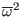
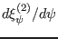

After using Fourier spectrum expansion and taking the inner product over
 , Eq. (190) can be written as the following system of
ordinary differential equations:
, Eq. (190) can be written as the following system of
ordinary differential equations:
where is the total number of the poloidal harmonics included in the
Fourier expansion, the matrix elements
are
functions of and
. Next, we specify the boundary
condition for the system. Note that equations system (251) has
first-order differential equations, for which we need to specify
boundary conditions to make the solution unique. The geometry determines that
the radial displacement at the magnetic axis must be zero, i.e.,
We consider only the modes that vanish at the plasma boundary, for which we
have the following boundary conditions:
Now Eqs. (252) and (253) provide boundary
conditions, half of which are at the boundary
and half are at
the boundary
. Therefore equations system
(251) along with the boundary conditions Eqs. (252) and
(253) constitutes a standard two-points boundary
problem[5]. Note, however, that we are solving a eigenvalue
problem, for which there is an additional equation for
:
This increases the number of equations by one and so we need one additional
boundary condition. Note that, by eliminating all
,
equations system (251) can be written as a system of second-order
differential equations for
. Further note that the unknown
functions
satisfy homogeneous equations and homogeneous
boundary conditions, which indicates that if
with
are solutions, then
are also solutions to
the original equations, where is a constant. Therefore the value of the
derivative of
at the boundary have one degree of
freedom. Due to this fact, one of the derivatives
,
,...,
 at
can be set to be a nonzero value. For example, setting the value of
at to be and making use of
at , we obtain
at
can be set to be a nonzero value. For example, setting the value of
at to be and making use of
at , we obtain
which can be solved to give
which provides the additional boundary condition we need. In the present
version of my code, for convenience, I directly set the value of
to a small value, instead of using Eq.
(256). The following sketch map describes the function
for which we need to find roots in the shooting process.
yj
2015-09-04